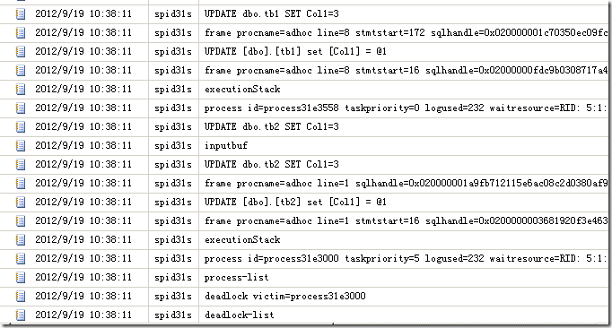

死锁的本质是一种僵持状态，是多个主体对于资源的争用而导致的。理解死锁首先需要对死锁所涉及的相关观念有一个理解。
要理解SQL Server中的死锁，更好的方式是通过类比从更大的面理解死锁。比如说一个经典的例子就是汽车（主体）对于道路(资源)的征用，如图1所示。
图1.对于死锁的直观理解
在图1的例子中，每队汽车都占有一条道路，但都需要另外一队汽车所占有的另一条道路，因此互相阻塞，谁都无法前行，因此造成了死锁。由这个简单的例子可以看出，发生死锁需要四个必要条件，如下:
1）互斥条件：
主体对于资源是独占的，图1中每条汽车道只能跑一队汽车，不能跑第二队。
2)请求和等待条件:
指主体已经保持至少一个资源，但又提出了新的资源请求，而该资源已被其它主体占有，此时请求主体阻塞，但又对自己已获得的其它资源保持不放。在图1中，每队汽车已经占有了一条车道，又想获得另一条由其它车队占有的车道，造成阻塞。
3)不剥夺条件
指的是主体已经获得的资源在完成其目标之前不能被释放。在图1中，目标指的是汽车可以通过车道，不剥夺指的是在完成这个目标之前，车队并不会让出其已占的车道。
4)环路等待条件
指在发生死锁时，必然存在一个主体——资源的环形链，即主体集合{P0，P1，P2，···，Pn}中的P0正在等待一个P1占用的资源；P1正在等待P2占用的资源，……，Pn正在等待已被P0占用的资源。在图1中可以看出，四条车道和四队汽车正好符号环路等待的条件，车队1希望获得车队2占有的车道，车队2希望获得车队3占有的车道，车队3希望获得车队4占有的车道,车队4反过来又希望获得车队1占有的车道，形成一个环路。
下面让我们再缩小死锁的范围，回到计算机的世界。在计算机中，主体的这个抽象的词被更具体的进程所替代，而资源缩小到计算机所使用的资源。在计算机中，死锁是由阻塞所引起。因此在开始之间，我想简单介绍一下进程的几种状态，如果有兴趣，也可以参看我之前的一篇文章:http://www.cnblogs.com/CareySon/archive/2012/05/04/ProcessAndThread.html.
简单来说，进程是组织资源的最小单位，多道操作系统中允许并发进行，每一道进程都像图1所示的汽车那样，需要前进，在前进的过程中，需要各种资源以及CPU，图2是不考虑进行创建销毁等状态，简单概述进程的几种状态。
图2.进程的几种状态
很多资源是可以共享的，比如内存。但对于打印机等资源来说就需要独占。图2中的几种状态简单理解是，当进程没有所需的资源时，比如说等待IO，等待打印机，这时是阻塞状态。而当进程获得了这些资源时，就可以变为就绪状态，在就绪状态的进程再获得CPU时，就变为执行状态。而执行的过程中，CPU被剥夺了就继续变为就绪状态，或是当需要其它资源时，就会继续变为阻塞状态。以此往复。
在操作系统中，有些资源可以是不可剥夺资源，比如打印机，当打印机被一个进程占用时，另一个进程就会被阻塞。还有一类资源是要重点强调的,这类资源是临时性资源，比如进程产生的信号量,消息，缓冲区内的消息，多个进程或线程访问这类资源时更容易引起死锁。在SQL Server中产生的死锁其实就是由这类资源所造成的。
当两个或多个进程既然有了当前的资源，又需要额外的资源时，满足了上面所述死锁的四个条件时，就会产生死锁。
在SQL Server中，阻塞更多的是产生于实现并发之间的隔离性。为了使得并发连接所做的操作之间的影响到达某一期望值而对资源人为的进行加锁(锁本质其实可以看作是一个标志位)。当一个连接对特定的资源进行操作时，另一个连接同时对同样的资源进行操作就会被阻塞(当然了，这和锁之间的兼容性有关，关于锁更深入的讨论超出了本文的范围，关于这部分内容可以看我的另一篇文章:T-SQL查询进阶—理解SQL Server中的锁)，阻塞是死锁产生的必要条件。
下面，我们通过一个简单的例子来看死锁。
首先，要出现死锁，一定要满足前面提到死锁出现的四个必要条件，图3中可以清楚的看到这两个连接(SPID52和SPID55)是如何满足这四个条件的。
图3.一个死锁示例
图3中死锁后可以看到，SQL Server并不会让死锁僵持下去，而是通过一个叫Lock Monitor的线程定期进行检测（默认是5秒）。当发现死锁后，会剥夺其中一个SPID占有的资源，好让另一个SPID执行下去，具体剥夺哪一个SPID基于如下两个因素:
1.死锁的优先级。
2.在死锁优先级相同的情况下，根据开销，开销小的事务将会被剥夺
下面，还是根据图3中的例子，我们设置死锁优先级，使得左边的事务被剥夺回滚，如图4所示。
图4.设置死锁优先级后，优先级低的SPID被剥夺
首先要理解，在多并发的环境中，死锁是不可避免的，只能尽量的通过合理的数据库设计，良好的索引，适当的查询语句以及隔离等级来尽量的减少。因此，检测死锁的目的是知道哪里可能会产生死锁，通过对检测到的死锁进行分析后，尽量的优化查询/索引/隔离等级来降低死锁发生的可能性。
查看死锁有两种方式，一种是通过服务端的Trace来做，另一种是通过SQL Profiler，首先让我们来看通过Trace来抓死锁。
通过Trace来看死锁
当死锁发生后，通过服务端的Trace就可以将死锁信息传到日志。在SQL Server 2000时代，只能通过Trace flag 1204来开启，由于Trace flag 1204并不能提供XML死锁图，在SQL Server 2005以及之后的版本被Trace flag 1222所取代。
为了在服务端针对所有的Session开启Trace flag 1222。可以通过如代码1所示。
DBCC TRACEON(1222,-1)
代码1.针对所有Session开启1222这个Trace Flag
除去代码1之外，还可以通过在启动SQL Server实例之前，对加启动参数 –t1222。这里就不再细说了。
此时，当发生死锁后，就能从日志看到相关的记录，如图5所示。

图5.死锁后的记录
通过Profiler来查看死锁
另一种方法是开启Profiler来捕捉,Profiler捕捉到的图示死锁信息内容就更直观了，Profiler的设置如图6所示。
图6.Profiler中抓死锁图的设置
所抓到的死锁图如图7所示。
图7.死锁图
通过这个死锁图，可以更直观的看到死锁产生的主体和资源，并且鼠标移到主体上时，还可以显示造成死锁的语句。死锁的牺牲品进程会被打X号。
上面的死锁图还可以看到造成死锁的资源。
由书签查找产生的死锁
这类死锁产生的原因是书签查找和更新数据产生的僵持状态。简单来说,就是由于Update语句对基本表产生X锁，然后需要对表上的索引也进行更新，而表上的索引正好被另一个连接进行查找，加了S锁，此时又产生书签查找去基本表加了X锁的数据进行书签查找，此时形成死锁，这个概念可以从图8看到。
图8.由书签查找产生的死锁
这种死锁可以通过Include列来减少书签查找，从而减少这种类型死锁发生的概率。
由外键产生的死锁
这类死锁产生的原因来自外键约束。当主表(也就是主键是从表外键的那个表)更新数据时，需要查看从表，以确定从表的外键列满足外键约束。此时会在主表上加X锁，但这并不能阻止同一时间，另一个SPID向从表添加被修改的主表主键，为了解决这个问题，SQL Server在进行这类更新时，使用Range锁，这种锁是当隔离等级为序列化时才有的，因此在这时虽然隔离等级可能是默认的已提交读，但是行为却是序列化。这很可能就会导致死锁。
解决办法之一是向外键列添加索引，使得Range锁加在索引上，而不是表本身。从而降低了死锁发生的概率。
由于推进顺序不当产生的死锁
这也是图3中死锁的原因。在多个事务对资源的使用顺序不当，形成死锁环路而引发的。解决方法是尽量是资源的使用顺序一致。这也是死锁问题出现最多的一种情况。
上面简单讲述了SQL Server中产生死锁的一些情况。下面我们从更宽泛的角度来看如何减少死锁。
在操作系统中，进程并发减少死锁的原理同样可以套用到SQL Server中。在操作系统对于处理死锁的办法如下：
1) 预防死锁。
这是一种较简单和直观的事先预防的方法。方法是通过设置某些限制条件，去破坏产生死锁的四个必要条件中的一个或者几个，来预防发生死锁。预防死锁是一种较易实现的方法，已被广泛使用。但是由于所施加的限制条件往往太严格，可能会导致系统资源利用率和系统吞吐量降低。
2) 避免死锁。
该方法同样是属于事先预防的策略，但它并不须事先采取各种限制措施去破坏产生死锁的的四个必要条件，而是在资源的动态分配过程中，用某种方法去防止系统进入不安全状态，从而避免发生死锁。
3)检测死锁。
这种方法并不须事先采取任何限制性措施，也不必检查系统是否已经进入不安全区，此方法允许系统在运行过程中发生死锁。但可通过系统所设置的检测机构，及时地检测出死锁的发生，并精确地确定与死锁有关的进程和资源，然后采取适当措施，从系统中将已发生的死锁清除掉。
4)解除死锁。
这是与检测死锁相配套的一种措施。当检测到系统中已发生死锁时，须将进程从死锁状态中解脱出来。常用的实施方法是撤销或挂起一些进程，以便回收一些资源，再将这些资源分配给已处于阻塞状态的进程，使之转为就绪状态，以继续运行。死锁的检测和解除措施，有可能使系统获得较好的资源利用率和吞吐量，但在实现上难度也最大。
由上面4中处理死锁的办法看，其中检测死锁和解除死锁是Lock Monitor的事，作为DBA或数据库开发人员，处理死锁要放在预防和避免死锁上。
预防死锁
预防死锁就是破坏四个必要条件中的某一个和几个，使其不能形成死锁。有如下几种办法
1)破坏互斥条件
破坏互斥条件有比较严格的限制,在SQL Server中，如果业务逻辑上允许脏读，则可以通过将隔离等级改为未提交读或使用索引提示。这样使得读取不用加S锁，从而避免了和其它查询所加的与S锁不兼容的锁互斥，进而减少了死锁出现的概率。
2)破坏请求和等待条件
这点由于事务存在原子性，是不可破坏的，因为解决办法是尽量的减少事务的长度，事务内执行的越快越好。这也可以减少死锁出现的概率。
3)破坏不剥夺条件
由于事务的原子性和一致性，不剥夺条件同样不可破坏。但我们可以通过增加资源和减少资源占用两个角度来考虑。
增加资源：比如说通过建立非聚集索引，使得有了额外的资源，查询很多时候就不再索要锁基本表，转而锁非聚集索引，如果索引能够“覆盖(Cover)”查询，那更好不过。因此索引Include列不仅仅减少书签查找来提高性能，还能减少死锁。增加资源还可以通过SQL Server 2005之后的行版本控制进行，但这种方式并不推荐，在此不再详细讨论。
减少资源占用:比如说查询时，能用select col1,col2这种方式，就不要用select * .这有可能带来不必要的书签查找
避免死锁
避免死锁是在有限的资源下，使得主体争用资源不形成环路。比如说典型的银行家算法，就是在资源有限的情况下，在不造成现金流断裂的情况下，尽可能多的按一定顺序分配资源。
因此避免死锁的关键是“顺序”。在SQL Server中，尽量使查询对资源的使用顺序保持一致。比如图3就是一个典型的不按顺序请求资源而导致的死锁。假设图3的顺序改为图9所示顺序，那是形不成死锁的，转而，死锁会变为等待。
图9.按顺序，死锁转为等待
那既然死锁无法避免，在出现死锁的时候要有一种处理机制。可以想象一下，如果你的程序是一个电子商务网站，由于死锁造成用户的生成的订单被RollBack…
因此死锁的处理在SQL Server可以放在两个层面进行
在SQL Server层面处理死锁
首先要知道，SQL Server中死锁的错误代码是1205，由于死锁是由阻塞引起的，而阻塞的时间往往都不长，索引可以通过重试几次来处理死锁，典型的代码如代码2所示。
--重试次数 DECLARE @retry INT SET @retry = 3 WHILE ( @retry > 0 ) BEGIN BEGIN TRY --这里是业务代码 --事务成功，将重试次数变为 SET @retry = 0 END TRY BEGIN CATCH --如果是死锁，则重试 IF ( ERROR_NUMBER() = 1205 ) SET @retry = @retry ELSE BEGIN --如果是其它错误，记录到日志等.. END END CATCH END
代码2.在SQl Server层面处理死锁
在程序层处理死锁
和SQL Server中处理死锁的方式大同小异，也是通过错误代码进行判断，下面是C#处理死锁的方式如代码3所示。
int retry = 3; while (retry > 0) { try { //执行sql语句的代码 //将重试次数变为0 retry = 0; } catch(SqlException e) { //如果是死锁的话,0.5S后重试 if(e.Number==1205) { System.Threading.Thread.Sleep(500); retry--; } //其它错误.... else { throw; } } }
代码3.死锁处理的C#代码
本文讲述了死锁的概念，产生死锁的四个必要条件，死锁的处理方式和在SQL Server中如何检测避免和处理死锁。死锁是由于阻塞引起的，了解这部分基本概念对于死锁方面的排错是非常必要的。